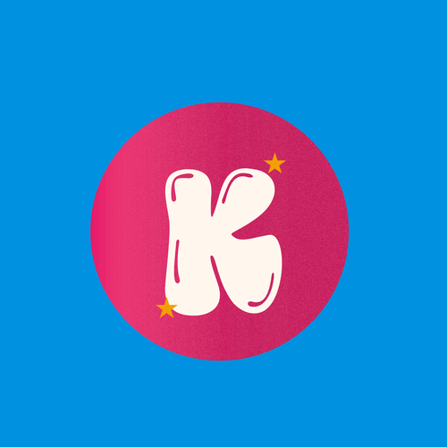

The person behind the page
[Placeholder bio — swap in your own words here.] This corner started as a place to put the stories and sketches that didn't have anywhere else to go, and slowly turned into a whole cozy little world. I write fiction in slow chapters, draw whatever's in my head that week, and try to be honest about the rest of it in between.
Say hi[Placeholder — this is where the real origin story goes.] KennyIzzy is named after the two halves of what this place is: the quiet, careful side that writes long fiction, and the brighter, louder side that can't stop doodling in the margins. Most days it's a little of both.
Everything posted here is original — written and drawn by hand, one chapter and one sketch at a time. No schedule, no pressure, just whatever's true that week.
One warm email whenever there's a new story, sketch, or feelings post. No spam, just cozy.